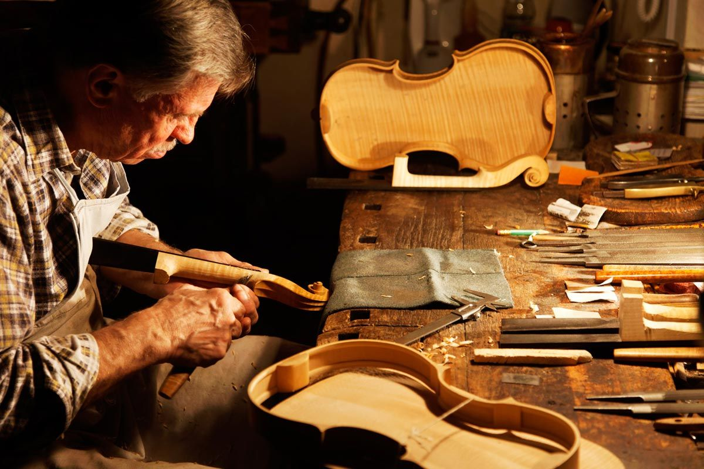
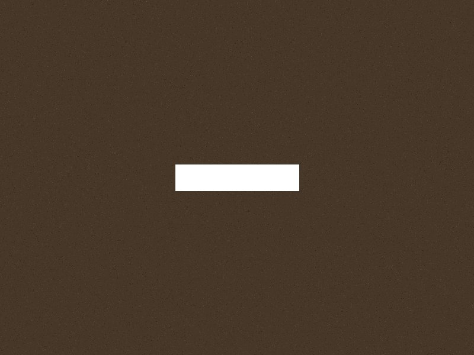
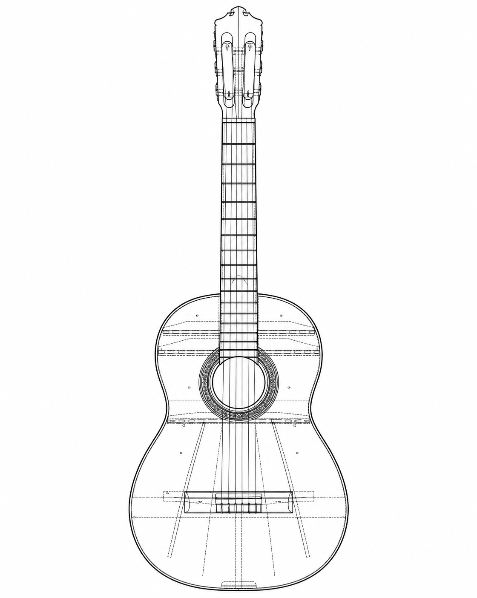
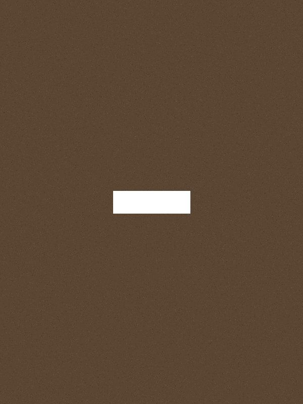
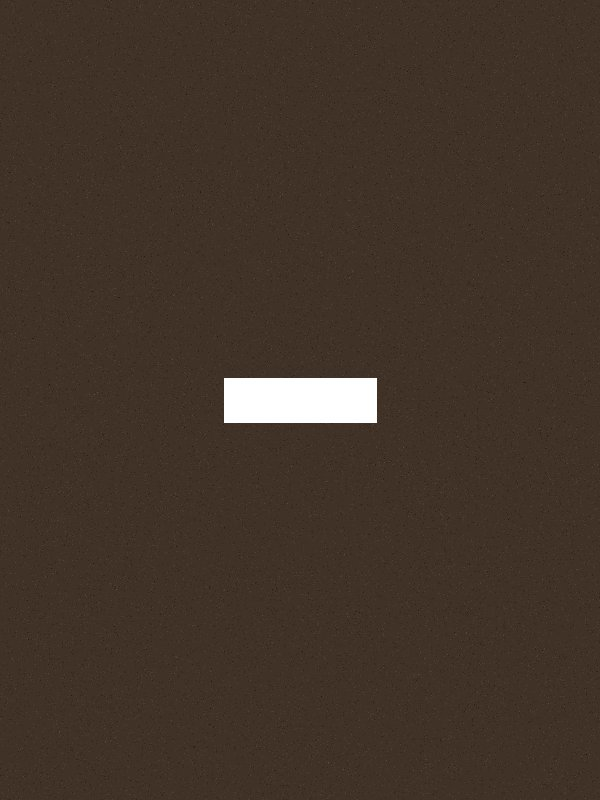
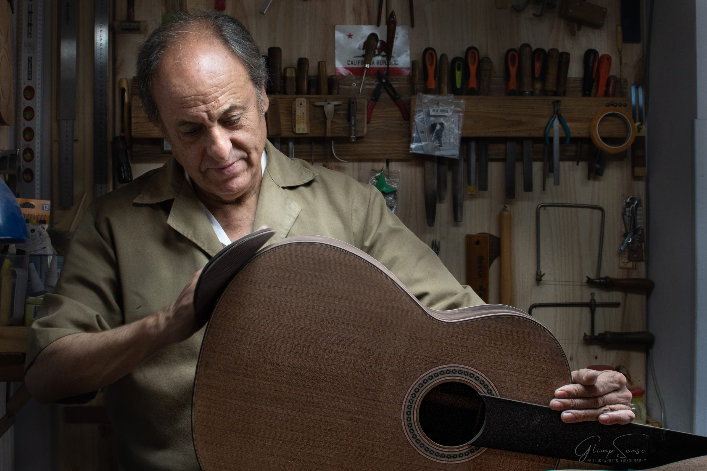
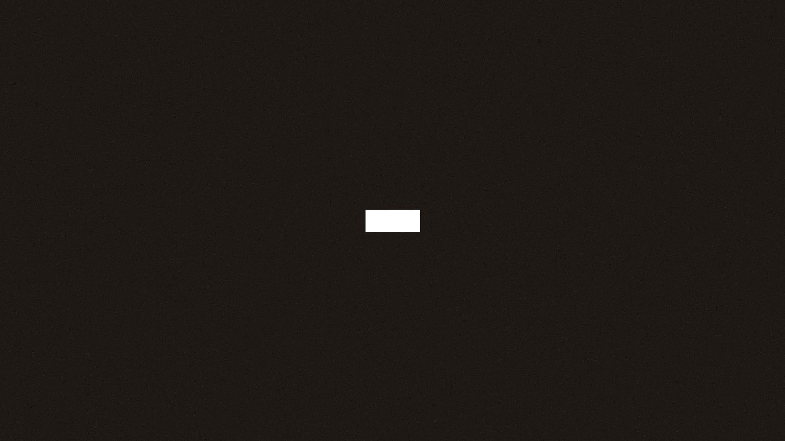

01
SELECCIÓN
Cada madera se elige por su carácter sonoro: densidad, resonancia y estabilidad. No hay dos piezas iguales.
- Cedro canadiense — tapas
- Palo santo — aros y fondo
- Ébano africano — diapasón

Construcción artesanal y restauración profesional.
Buenos Aires, desde 2006.
Construcción artesanal y restauración profesional.
Buenos Aires, desde 2006.
Buenos Aires · Luthería artesanal
Construcción artesanal, restauración profesional y formación completa para quienes desean aprender el oficio.
/ 01
Cada madera se elige por su carácter sonoro: densidad, resonancia y estabilidad. No hay dos piezas iguales.
El instrumento se dibuja desde el músico hacia afuera. Escala, ergonomía y estética se resuelven juntas antes de cortar la primera pieza.

Cientos de horas de ensamble preciso. Cada unión, cada curva, cada traste define cómo va a sonar el instrumento dentro de veinte años.

La laca no solo protege: deja respirar la madera y potencia la resonancia. El pulido final es también un acto de escucha.

/ 02
Tres zonas, tres lógicas constructivas. Seleccioná una parte para ver su ficha técnica.

Seleccioná una parte del instrumento
01 / CUERPO
02 / CUELLO
03 / CLAVIJERO
/ 03
Definimos juntos el instrumento: estilo, escala, maderas y presupuesto.
Análisis técnico del músico y sus necesidades reales de sonido.
Propuesta detallada sin sorpresas: materiales, tiempos y costo total.
Trabajo artesanal, con actualizaciones periódicas del proceso.
Puesta a punto final y revisión profesional antes de que el instrumento llegue a tus manos.
/ 04
Cursos presenciales para construir, reparar y entender instrumentos de manera profesional.

Construís tu propia guitarra clásica de principio a fin, aprendiendo cada etapa del oficio.

Técnicas profesionales para diagnosticar y reparar instrumentos acústicos y eléctricos.

Construís tu propia guitarra eléctrica sólida o semi-hollow, incluyendo electrónica.
Construir un instrumento para toda la vida significa que no existen detalles menores.

/ 06
Cuatro especies. Cuatro caracteres sonoros distintos.

PALISANDRO
PROPIEDADES

ALGARROBO
PROPIEDADES

CIPRÉS
PROPIEDADES

ABETO
PROPIEDADES
Cada instrumento que sale del taller lleva el tiempo, el criterio y el oído de alguien que conoce la madera desde adentro.

/ 08
Luz natural, banco de trabajo. Aquí empieza todo.
Prensas en frío. 24 horas de silencio y presión exacta.
Gubias y formones. Cada virucha es una decisión sonora.
Nitrocelulosa de curado lento. La última piel del instrumento.
/ 09
"Aprendí a escuchar la madera. El proceso de construcción me cambió la forma de tocar."
"Cada lección fue una revelación. No imaginé que aprendería tanto en tan poco tiempo."

Laura Cáceres
Alumna, Ciclo 2024
"La devolvió mejor de lo que era cuando salió de fábrica. Un trabajo impecable."

Diego Ferreira
Músico de sesión
"El instrumento que construí en el taller suena mejor que cualquier guitarra que compré."
"Recomiendo el curso a cualquier músico que quiera entender su instrumento de verdad."
Carla Medina
Docente de música
/ 10
No. Los cursos iniciales están diseñados para personas sin experiencia previa. Solo necesitás ganas de aprender y compromiso con el proceso.
Sí. Maderas, herrajes, lacas y herramientas del taller están incluidos en el costo del curso. Al terminar, te llevás el instrumento que construiste.
Sí. Trabajamos con músicos que necesitan un instrumento construido específicamente para su forma de tocar. Escribinos para coordinar una consulta.
Sí. Hacemos restauraciones y reparaciones de guitarras acústicas, clásicas y eléctricas. Cada trabajo incluye diagnóstico previo y presupuesto sin compromiso.
Depende del curso. Los programas de construcción tienen carga horaria semanal de 4 a 6 horas, distribuidas en dos o tres encuentros presenciales.